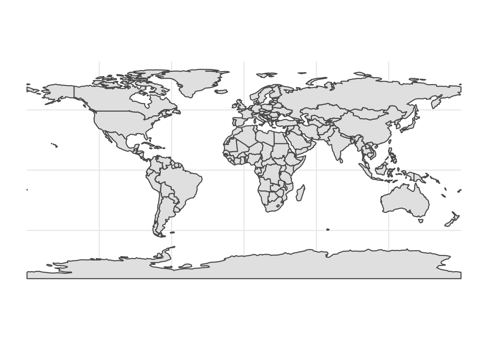
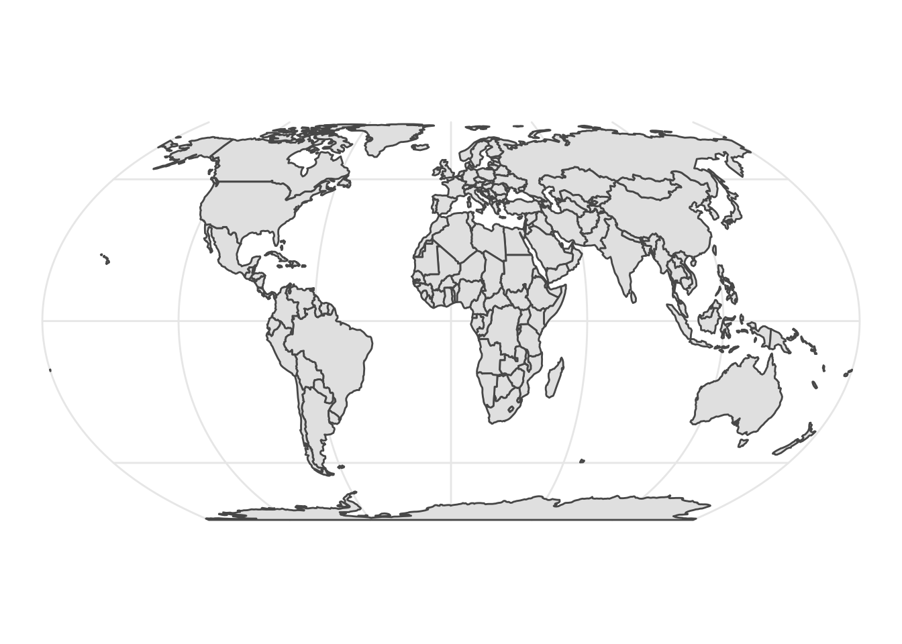
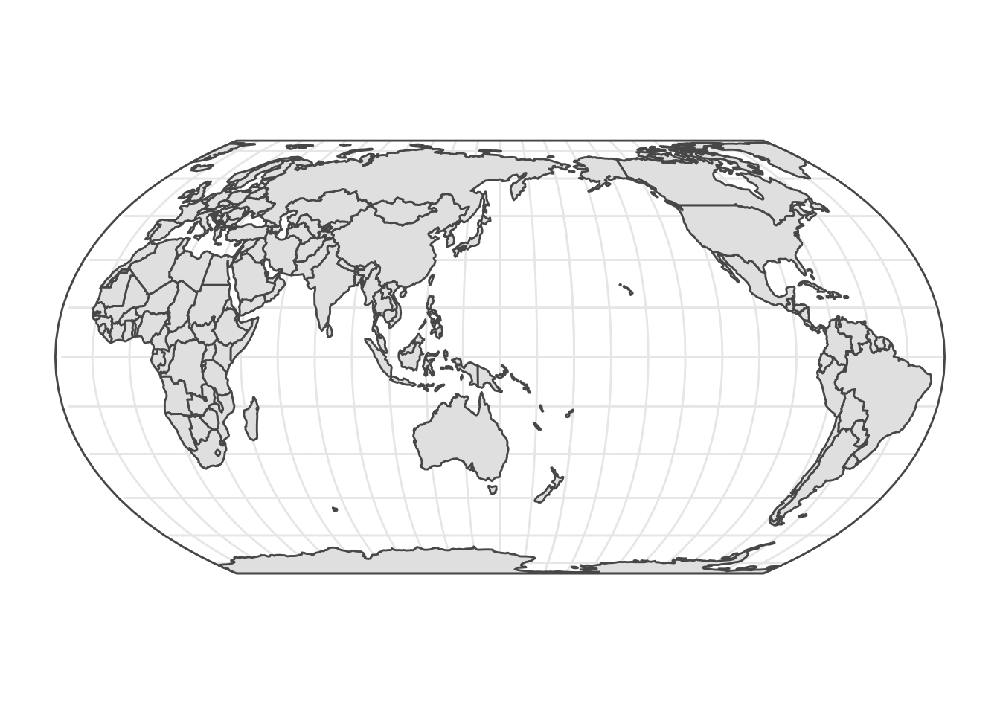

「Equal Earth」投影法がすでにPROJ 5.2（9月1日リリースなのかな？）に。／Equal Earth — PROJ.4 5.1.0 documentation https://t.co/ELXsVelPXr
— 田村一軌 (@kzktmr) August 27, 2018
1年以上前に，このようなツイートをしたのですが，いつの間にかPROJのバージョンが5.2になっていたので，試してみました。
library(magrittr)
library(ggplot2)
library(rnaturalearth)
library(sf)## Linking to GEOS 3.7.2, GDAL 2.4.2, PROJ 5.2.0地図データは，rnaturalearthを使って用意します。
world <- ne_countries(scale = "small", returnclass = "sf")
ggplot() + geom_sf(data = world) + theme_minimal()
これをcoord_sf(crs = "+proj=eqearth")として投影変換するだけだと思っていたのですが，このバージョンのGDALとPROJではうまく行かないらしく，workaroundとしては，crs = "+proj=eqearth +wktext"とするらしいです（参照）。
crs <- "+proj=eqearth +wktext"
ggplot() + geom_sf(data = world) + theme_minimal() +
coord_sf(crs = crs)
これで完成でもいいのですが，これだとグリニッジ子午線が中央にあります。日本付近（東経150°）を中央に持ってきたいので， stackoverflowを参考に，手を入れます。
lon_0 <- 150
crs <- paste0("+proj=eqearth +wktext +lon_0=", lon_0)
bbox <- st_polygon(x = list(rbind(c(lon_0 - 180, 90),
c(lon_0 + 180 - 1e-5, 90),
c(lon_0 + 180 - 1e-5, -90),
c(lon_0 - 180, -90),
c(lon_0 - 180, 90)))) %>%
st_sfc() %>% st_segmentize(5) %>% st_set_crs(4326)
slit0 <- st_polygon(x = list(rbind(c(lon_0 - 180 - 1e-5, 90),
c(lon_0 - 180 + 1e-5, 90),
c(lon_0 - 180 + 1e-5, -90),
c(lon_0 - 180 - 1e-5, -90),
c(lon_0 - 180 - 1e-5, 90)))) %>%
st_sfc() %>% st_segmentize(5) %>% st_set_crs(4326)
world <- ne_countries(scale = "small", returnclass = "sf") %>%
st_difference(slit0) ## although coordinates are longitude/latitude, st_difference assumes that they are planar## Warning: attribute variables are assumed to be spatially constant throughout all
## geometriesslit1 <- st_polygon(x = list(rbind(c(180 - 1e-5, 90),
c(180 + 1e-5, 90),
c(180 + 1e-5, -90),
c(180 - 1e-5, -90),
c(180 - 1e-5, 90)))) %>%
st_sfc() %>% st_segmentize(5) %>%
st_set_crs(4326) %>% st_transform(crs = crs)
world_ee <- world %>% st_transform(crs = crs)
crosses <- world_ee %>% st_intersects(slit1) %>%
sapply(length) %>% as.logical() %>% which()
world_ee[crosses,] %<>% st_buffer(0)
ggplot() +
geom_sf(data = bbox, fill = "transparent") +
geom_sf(data = world_ee) +
coord_sf(crs = crs) +
theme_minimal() +
scale_x_continuous(breaks = seq(-180, 180, 15)) +
scale_y_continuous(breaks = seq(-90, 90, 15))